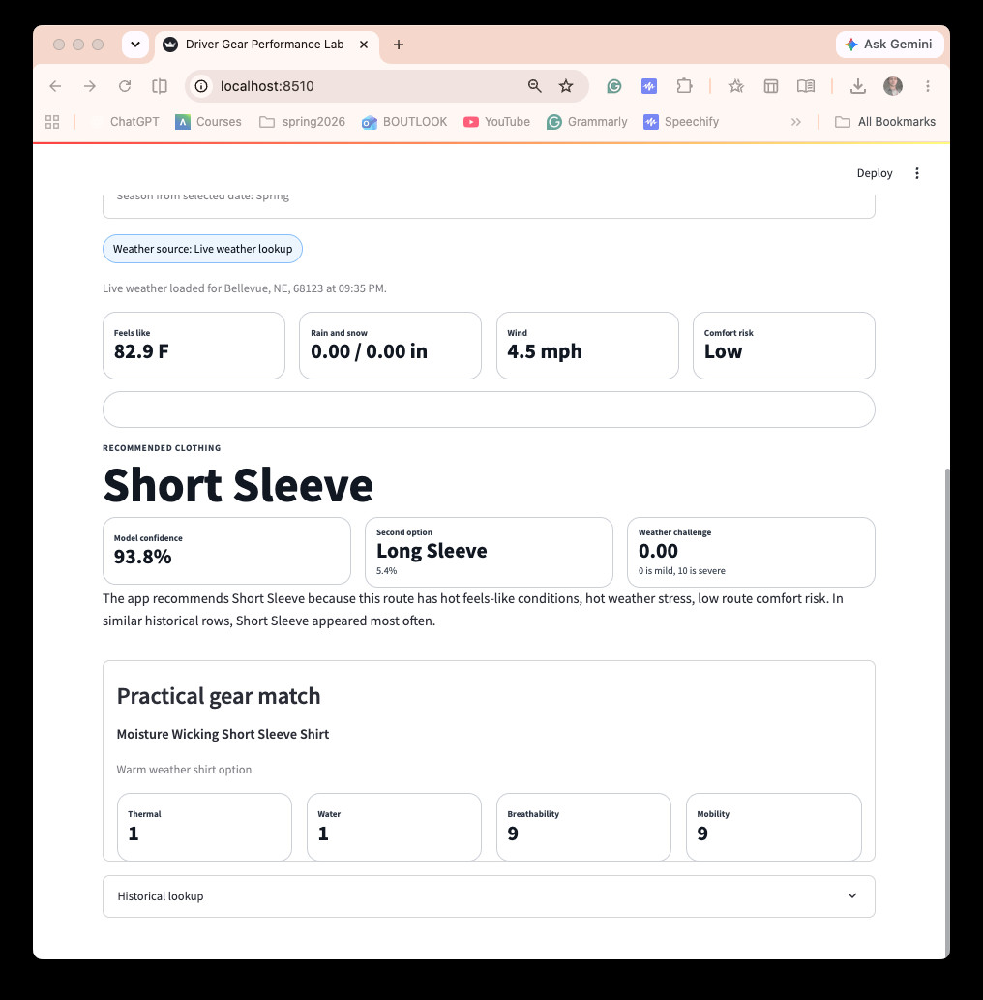

Bellevue University & independent learning
School projects.
Data questions, predictive models, and practical visualizations created through university coursework and experience.
Includes three entries from Bellevue University’s DSC 450 Fall Capstone course.
Explore the research visually.
Original research figures from the school projects. Select a frame to open its project.

Predicting Economic Damage from Severe Weather
We tested whether recorded storm characteristics can predict any documented economic damage, rather than confusing frequent storms with costly ones.

Forecasting Regional Electricity Demand
I explored how forecasting models behave across different demand conditions, then built the visual narrative, final educational video, and source-linked research reference.

NYC Dry Recycling Across Communities
Our team analyzed dry recycling collection share across NYC's 59 community districts. I prepared and validated the collection and neighborhood datasets.

Amazon Package Pick-Time Efficiency
I used firsthand delivery observations to motivate a simulated workflow and visualized modeled package search times across package types, bags and routes.

Driver Gear Performance Lab
I deployed a tuned Random Forest in Streamlit to recommend a driver shirt category from route and weather conditions, with a transparent explanation of the prediction.